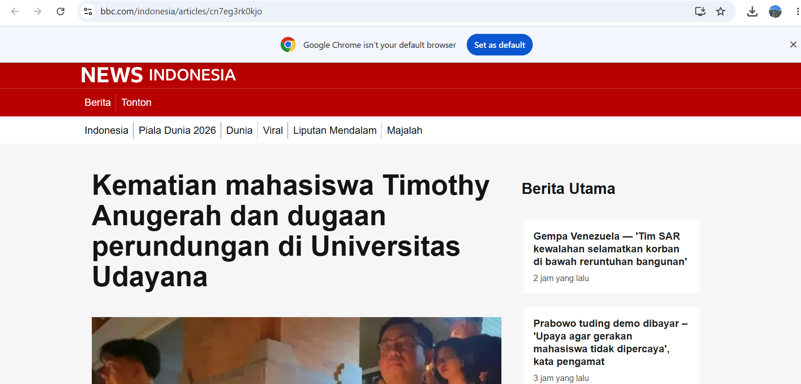

Perkembangan teknologi informasi telah mengubah cara masyarakat berkomunikasi. Media sosial dan aplikasi percakapan memberikan kebebasan kepada setiap orang untuk menyampaikan pendapat. Namun, kebebasan tersebut juga dapat disalahgunakan melalui perundungan, penghinaan, dan komentar yang tidak menunjukkan empati. Perilaku tersebut bertentangan dengan nilai moral maupun nilai agama karena dapat melukai orang lain serta merusak hubungan sosial.
Nilai moral mengajarkan manusia untuk menghormati sesama, bertanggung jawab atas tindakan, dan memiliki rasa empati. Nilai agama menjadi pedoman hidup agar manusia menjaga akhlak, saling menghargai, dan menghindari perilaku yang menyakiti orang lain.
"Wahai orang-orang yang beriman! Janganlah suatu kaum mengolok-olok kaum yang lain, boleh jadi mereka lebih baik daripada mereka."
"Barang siapa yang beriman kepada Allah dan hari akhir, maka hendaklah ia berkata baik atau diam."
Pada tanggal 22 Oktober 2025, BBC News Indonesia memberitakan meninggalnya mahasiswa Fakultas Ilmu Sosial dan Ilmu Politik Universitas Udayana, Timothy Anugerah Saputra. Menurut pemberitaan tersebut, Timothy ditemukan setelah diduga melompat dari lantai empat gedung fakultas dan sempat mendapatkan perawatan sebelum akhirnya dinyatakan meninggal dunia.
Kasus ini menjadi perhatian masyarakat setelah beredar tangkapan layar percakapan dalam grup WhatsApp mahasiswa yang berisi komentar bernada olok-olok terhadap korban. Alih-alih menunjukkan rasa belasungkawa, beberapa anggota grup justru memberikan komentar yang dianggap tidak pantas. Percakapan tersebut kemudian viral di media sosial dan menuai kecaman dari masyarakat.
Universitas Udayana menjelaskan bahwa percakapan tersebut terjadi setelah korban meninggal dunia sehingga tidak dapat disimpulkan sebagai penyebab peristiwa tersebut. Hingga berita dipublikasikan, pihak kepolisian masih melakukan penyelidikan mengenai penyebab pasti kematian Timothy.

Gambar 1.
Screenshot berita BBC News Indonesia mengenai
meninggalnya Timothy Anugerah Saputra dan viralnya
percakapan mahasiswa.
Sumber : BBC News Indonesia (22 Oktober 2025).
Kasus ini menunjukkan bahwa sikap mengolok-olok dan kurangnya empati merupakan perilaku yang tidak sesuai dengan nilai moral maupun nilai agama. Terlepas dari penyebab pasti kematian korban yang masih diselidiki, komentar yang merendahkan seseorang ketika mengalami musibah mencerminkan rendahnya kepedulian sosial.
Dari perspektif moral, setiap manusia berhak diperlakukan dengan hormat. Dari perspektif agama, menghina dan mempermalukan orang lain merupakan perbuatan yang dilarang. Islam mengajarkan untuk menjaga lisan, menghormati sesama, dan membantu orang yang sedang mengalami kesulitan.
Menurut saya, kasus Timothy menjadi pelajaran penting bahwa setiap ucapan maupun komentar yang kita sampaikan dapat memberikan dampak besar bagi orang lain. Walaupun penyebab kematian korban masih dalam penyelidikan, perilaku mengolok-olok seseorang yang sedang mengalami musibah tetap tidak dapat dibenarkan karena bertentangan dengan nilai moral dan nilai agama.
Sebagai mahasiswa, saya berpendapat bahwa lingkungan kampus harus menjadi tempat yang aman, saling menghargai, dan penuh kepedulian. Apabila mengetahui ada teman yang sedang mengalami tekanan, kita sebaiknya memberikan dukungan, mendengarkan dengan empati, serta mengarahkannya kepada pihak yang dapat memberikan bantuan.
Kurangnya empati dan perilaku mengolok-olok merupakan tindakan yang bertentangan dengan nilai moral dan nilai agama. Kasus Timothy Anugerah Saputra mengingatkan bahwa etika dalam berkomunikasi harus selalu dijaga baik di dunia nyata maupun di dunia digital.